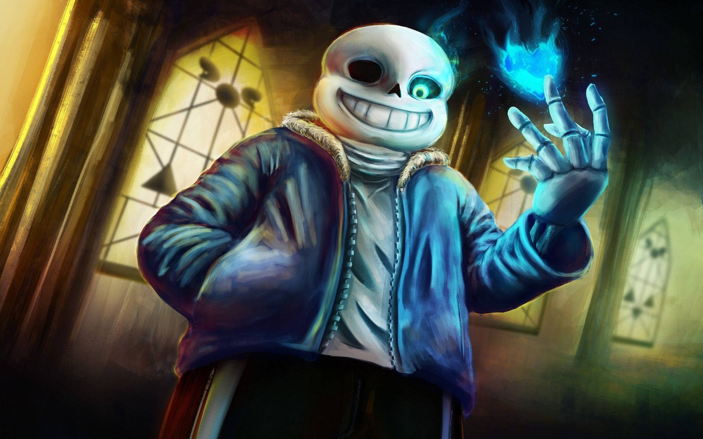
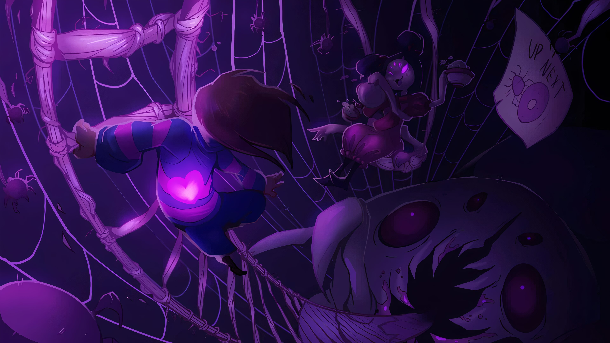

The purpose of this website is to showcase why Undertale is considered one of the most unique and beloved indie games of all time. The website will explore its storytelling, gameplay mechanics, music, and emotional impact on players.
Audience
The intended audience includes gamers who are curious about Undertale, fans of indie games, and anyone interested in learning what makes a video game memorable and meaningful.
Undertale is a one-of-a-kind indie RPG where your choices truly matter.
Colored paragraph example
With its unforgettable characters, emotional storytelling, and hauntingly
beautiful soundtrack, Undertale has left a lasting impact on the gaming world.
Navigation
Site Map
Home
Story & Characters
Gameplay & Music
Wireframes
Home
Story & Characters
Why the Story Matters:
Undertale’s story is what truly makes it memorable. The game starts with a child who falls into the Underground, a world filled with monsters. From this point, players can choose how they interact with every character—either through violence or kindness. The consequences of these choices create emotional depth rarely seen in games.
Character Development:
Every major character is well-developed and meaningful. Players meet Papyrus, a silly skeleton who wants to join the Royal Guard; Sans, who hides depth behind his jokes; and Toriel, who acts as a mother figure. Your choices affect how they treat you and how the game ends.
Emotional Connection:
The way Undertale makes you feel responsible for the emotional outcome sets it apart. Many players remember the emotional weight more than the gameplay itself.
Gameplay & Music
Unique Combat:
Undertale features a unique combat system where you can attack or resolve conflict peacefully. In real-time, players dodge attacks using mini-games and patterns. This system keeps the player engaged in both gameplay and morality.
Player Choice:
Actions have long-lasting effects—even if you restart the game. Undertale remembers what you did. This creates a meta-layer of storytelling unlike most RPGs.
Iconic Soundtrack:
Toby Fox’s soundtrack is one of the most iconic in indie gaming. Songs like “Megalovania,” “Hopes and Dreams,” and “His Theme” are instantly recognizable. The soundtrack enhances every mood and is part of why fans love and remember the game.
Image Planning
Home Page Images
Undertale logo (used above)
Main character in Underground (screenshot)
Story & Characters Page Images
Story & Characters
The Story of Undertale
Undertale begins with a mysterious yet simple premise: a human child accidentally falls into the Underground—a world sealed off from humanity, inhabited by monsters who were once banished after a great war.
The player navigates this strange land, encountering a diverse cast of characters who react dynamically to your choices. What sets Undertale apart is its unique moral system: you can choose to fight or show mercy, and these choices influence not only dialogue and events—but entire endings.
The game has three primary paths: Pacifist, Neutral, and Genocide. Each reveals different truths about the world and its characters, offering a level of emotional resonance and narrative replayability rarely seen in games.
Main Characters
Frisk: The silent protagonist whose actions define the story. Are you a bringer of peace, or destruction?
Sans: A laid-back skeleton known for puns and deep knowledge of timelines. His Genocide route fight is iconic.
Papyrus: Sans’ brother, full of energy and kindness. Wants to join the Royal Guard.
Toriel: A motherly figure who protects you early in the game. Warm and wise.
Asgore: King of the Underground. Wants to break the barrier by collecting human souls, but his pain shows he's more tragic than evil.
Flowey: A soulless flower who remembers everything and manipulates both player and narrative. Subverts traditional game morality.

Emotional Themes
Undertale thrives on emotional storytelling. Every character, no matter how silly or strange, has depth. The game explores friendship, loss, regret, redemption, and the burden of choice.
Whether you spare or destroy, Undertale never forgets—and neither will you.
Wireframes
Gameplay & Music
Unique Gameplay Mechanics
Combat That Makes You Think

Unlike traditional RPGs, Undertale allows you to choose whether to fight or show mercy. Every enemy encounter is a moral test: Will you destroy your foes or find a way to understand and spare them?
In combat, players dodge incoming attacks in a "bullet-hell" style mini-game. The variety of attacks keeps players on their toes and adds excitement even in non-violent runs.
Multiple Play Styles
Undertale supports three main routes: Pacifist, Neutral, and Genocide. Each one tells a drastically different story depending on the player’s choices.
Pacifist: Befriend everyone. No one dies. Discover the deepest lore and most hopeful ending.
Neutral: A mix of choices. The ending depends on who lived or died.
Genocide: Kill every character. Face intense battles and discover the darkest parts of the story.
Meta Elements
Undertale remembers what you do—even after resetting. Characters may comment on past actions from different playthroughs, making each decision feel permanent and significant. This "fourth wall awareness" is one of the game's standout features.
Soundtrack: A Soul of Its Own
Composed by Toby Fox
The soundtrack of Undertale is not just background noise—it's part of the emotional journey. Each song reflects the personality of the moment, from haunting melodies to pulse-pounding boss themes.
Iconic Tracks
Megalovania: A thrilling, high-energy theme for one of the toughest fights in the game.
Hopes and Dreams: An uplifting battle anthem during the Pacifist route's final boss.
His Theme: A deeply emotional track that perfectly complements the game’s most tender scenes.
Why the Music Matters
Fans often revisit the soundtrack long after finishing the game. It evokes strong memories of the characters, choices, and emotions experienced. In many ways, the music is as memorable as the story itself.